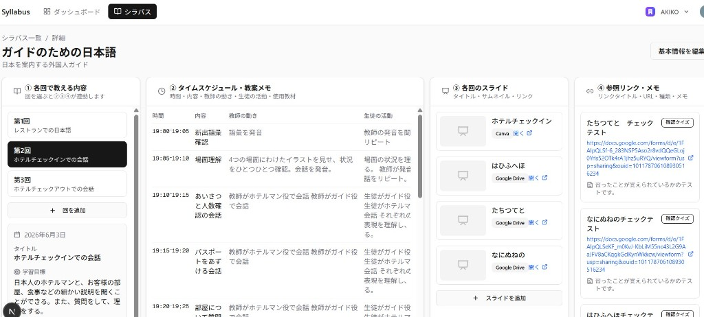
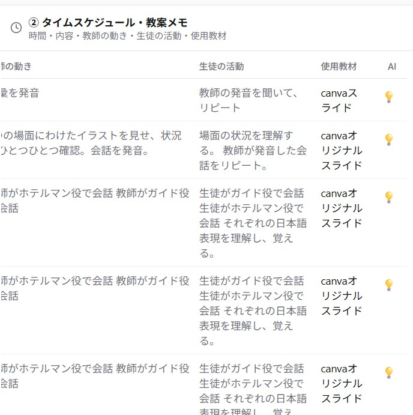
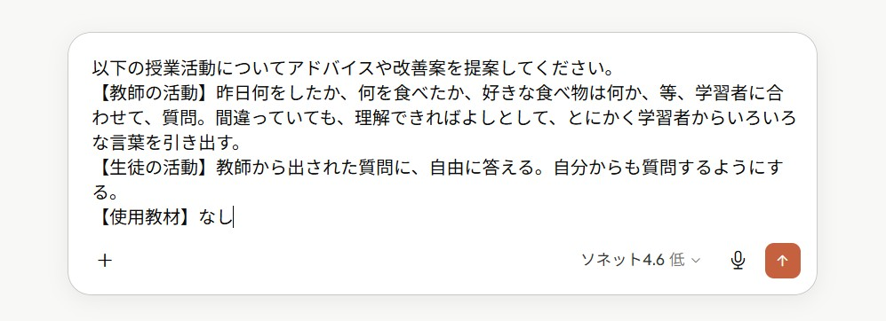

①
解決できる課題
- 「各時間の目標」「授業計画」「教案」「教材」がバラバラに存在し、毎度立ち上げが必要だった問題を、一つの画面で解決
- 学科全体のカリキュラムが一画面で確認できる
- 科目説明の際にこのツールを見せながら話すと細かいところまで伝わりやすい
「コースの内容」「教案」「教材」が、一つの画面で見られて操作できる。授業・科目の説明をするときに役立つツールです。

画像が見つかりません
images/tool-screenshot.png を配置してください① を選ぶと ②③④ が連動して表示される

